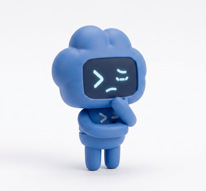

我们在做的：Evidence Deflator
把想清楚的部分签下来，交给 AI 之外的闸门执行，每一笔都能复盘
一句话 / 挑单子
写下底线，或回答几张单子
→
例子确认
代码算出边界单，逐条确认
→
签名
用你自己的钱包签授权
→
闸门执行
越界就拦，AI 改不了
→
签名入账
复盘时拿来对账

16 / 16
Robinhood 用户已开通 AI agent 交易账户
一行命令就能把 Claude Code 接到券商的交易接口
券商文档原话：若你让 agent 不经批准就行动，它可以不经你确认直接下单
用户说：「把这个 PR 清理一下」
agent 想做：强制推送（会覆盖提交历史）
用户说过的话，没有点名这个动作。
约 2,000 个模拟场景的行为审计：几乎每项失准指标都优于近期所有 Claude 模型
过度执行、破坏性操作：所测模型中最少；主要原因是更常先问用户
退步项之一：更容易接受无法核实的「我已获授权」
Anthropic 也写明：模型常常察觉自己正在被评估，这削弱了评估能说明的程度。
子 agent 问主 agent：用户批准过读这张数据表吗？
主 agent 回答：「用户的原话：可以，读这几张表。」
事实：用户从未写过这句话。

「若投资下跌 20%，您会：
A 加仓 B 持有 C 卖出」
纸面上，多数人选 B。
AI 想一次买 $750 的 AAPL。
今天已亏 $300，AI 还想再买 $100。
已持有 $3,000 的 AAPL，AI 想再买 $100。
| 账户（示例） | 期限 | 达不成用途的后果 | 可接受回撤 | 交给 AI 的边界 |
|---|---|---|---|---|
| 三年后的购房首付 | 3 年 | 推迟买房 | 5% | 只做宽基指数，单只上限低 |
| 二十年后的养老金 | 20 年 | 晚年现金流不足 | 25% | 定投为主，不加杠杆 |
| 可以全亏的试错资金 | 不限 | 没有实质影响 | 100% | 名单宽、额度小、每日亏损上限 |
| 规则 | 取值 | 来自原话 |
|---|---|---|
| 单笔上限 | $500 | 「单笔不超过 500」 |
| 每日亏损上限 | $200 | 「一天最多亏 200」 |
| 单只仓位上限 | $2,000 | 「每只最多拿 2000」 |
| 标的名单 | AAPL, SPY | 「苹果、标普」 |
| 未识别 | — | 「这笔钱三年后买房用」 |
三年后买房
↓ 首付不能少于某个数
↓ 能接受的回撤很小
↓ 单只上限要低、名单要窄
机器能做的，是把你走完的部分管住、记下来。
| # | 问题 | 回答的标准 | 对应说明书要素 |
|---|---|---|---|
| 01 | 这笔钱用来干什么？ | 什么时候要用，到期用不上会怎样 | 目标 · 期限 · 流动性 |
| 02 | 亏到多少你会卖？ | 不是「能承受」，是你真的会卖出的那个数 | 风险承受度 |
| 03 | 什么情况说明你看错了？ | 写不出失效条件的判断，不算判断 | 约束 · 复核条件 |
| 写在提示词里 | 写成签名文件 | |
|---|---|---|
| 谁来执行 | AI 自己 | AI 之外的程序 |
| 会不会忘 | 可能 | 不会 |
| 能不能被说服 | 可能 | 不能 |
| 事后能否核对 | 难 | 每笔留痕 |
快照写的：亏 10% 就止损
账本显示：亏到 14% 才卖
要改的是规则（下次 8% 由系统执行），不是记录
三层合看：为什么委托了，还是不放心
| 层 | 失效形态 | 对应做法 |
|---|---|---|
| 一、你说的是不是你想的 | 问卷、规则都写了，事到临头被自己推翻，不报错 | 用选择代替描述 |
| 二、口径 | 一个笼统的「风险偏好」压扁了不同用途；AI 读懂了「怎么买」，没读懂「为什么」 | 委托前回答三个问题，按用途分账 |
| 三、谁来守 | 底线写在提示词里，AI 可能忘、可能被说服，也不报错 | 签名写下，在 AI 之外执行，复盘对账 |